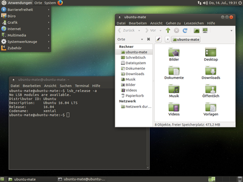
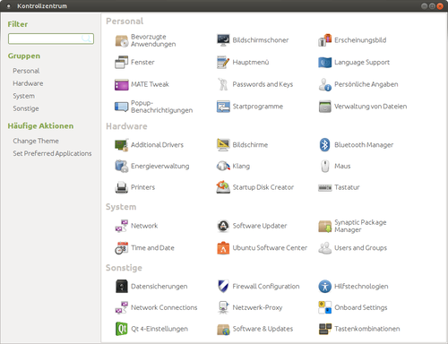

MATE
Dieser Artikel wurde für die folgenden Ubuntu-Versionen getestet:
Ubuntu 16.04 Xenial Xerus
Ubuntu 14.04 Trusty Tahr
Zum Verständnis dieses Artikels sind folgende Seiten hilfreich:
Die Desktop-Umgebung MATE  wurde initiiert, nachdem der GNOME-Desktop im April 2011 auf die Version 3.0 aktualisiert worden war. Da man mit dem neuen Bedienkonzept der GNOME Shell unzufrieden war, entschloss man sich zu einer Abspaltung (Fork), basierend auf der Vorgängerversion GNOME 2.32. MATE hat sich zum Ziel gesetzt, das klassische Desktop-Konzept von GNOME 2 fortzuführen. Es wird insbesondere bei dem auf Ubuntu basierenden Linux Mint neben Cinnamon als Standarddesktop eingesetzt. Ab Ubuntu 15.04 existiert eine offizielle Ubuntu-Variante: Ubuntu MATE.
wurde initiiert, nachdem der GNOME-Desktop im April 2011 auf die Version 3.0 aktualisiert worden war. Da man mit dem neuen Bedienkonzept der GNOME Shell unzufrieden war, entschloss man sich zu einer Abspaltung (Fork), basierend auf der Vorgängerversion GNOME 2.32. MATE hat sich zum Ziel gesetzt, das klassische Desktop-Konzept von GNOME 2 fortzuführen. Es wird insbesondere bei dem auf Ubuntu basierenden Linux Mint neben Cinnamon als Standarddesktop eingesetzt. Ab Ubuntu 15.04 existiert eine offizielle Ubuntu-Variante: Ubuntu MATE.
Um Verwechslungen zu vermeiden, wurden viele Standardanwendungen umbenannt. Beispielsweise hört der Dateimanager "Nautilus" nun auf den neuen Namen Caja. Nur so war es möglich, eine saubere Trennung zwischen GNOME- und MATE-Programmen umzusetzen.
Hinweis:
Bei gleichzeitiger Verwendung von auf GNOME 3 aufbauenden Desktops wie z.B. Unity traten in früheren MATE-Versionen Konflikte zwischen den verschiedenen installierten Desktop-Umgebungen auf. Diese Probleme sind inzwischen größtenteils gelöst (Stand: 2015). Man sollte dennoch immer eine möglichst aktuelle Version von MATE nutzen, insbesondere bei der Nachinstallation auf einem bestehenden Ubuntu-System.
Installation¶
|  |
| Ubuntu MATE 16.04 |
Installationsmedien¶
Mit 15.04 und der Anerkennung als offizielle Ubuntu-Variante sind Installationsmedien wie bei den anderen Varianten über Downloads zu finden. Speziell für Ubuntu 14.04 stellt das Team von Ubuntu MATE inoffizielle Installationsmedien  zur Verfügung.
zur Verfügung.
Aus den offiziellen Paketquellen¶
Obwohl geplant war, dass MATE ab Ubuntu 14.04 in den offiziellen Paketquellen enthalten sein sollte, ist dieses Vorhaben erst mit Ubuntu 14.10 umgesetzt worden.
mate-desktop-environment (universe)
 mit apturl
mit apturl
Paketliste zum Kopieren:
sudo apt-get install mate-desktop-environment
sudo aptitude install mate-desktop-environment
bzw. ab Ubuntu 15.04:
ubuntu-mate-desktop (universe)
mit apturl
Paketliste zum Kopieren:
sudo apt-get install ubuntu-mate-desktop
sudo aptitude install ubuntu-mate-desktop
Fremdquellen¶
Um MATE unter Ubuntu 14.04 zu installieren, werden zwei "Personal Packages Archive" (PPAs) [1] benötigt: neben dem PPA der MATE-Entwickler ein weiteres für 14.04. Für Ubuntu 16.04 reicht eines aus.
Ubuntu 16.04¶
Um ein bereits vorhandenes Ubuntu MATE von Version 1.12 auf 1.16 zu aktualisieren, werden folgende Befehle benötigt:
sudo apt-add-repository ppa:ubuntu-mate-dev/xenial-mate sudo apt-get update sudo apt-get dist-upgrade
Anschließend den Rechner neu starten.
Ubuntu 14.04¶
sudo apt-add-repository ppa:ubuntu-mate-dev/ppa sudo apt-add-repository ppa:ubuntu-mate-dev/trusty-mate sudo apt-get update sudo apt-get upgrade
Nach dem Aktualisieren der Paketquellen kann MATE über die folgenden Pakete installiert [2] werden:
sudo apt-get install --no-install-recommends ubuntu-mate-core ubuntu-mate-desktop
Bedienung¶
Nach abgeschlossener Installation kann bei der nächsten Anmeldung im Displaymanager MATE als Sitzung ausgewählt werden. MATE lässt sich genau so verwenden und konfigurieren wie GNOME 2.32. Bisher existieren folgende Artikel, die speziell bei MATE weiterhelfen:
MATE Grundlagen - Kurzeinführung
MATE Desktop anpassen - eigene Vorlieben umsetzen
MATE Menü - den integrierten Menü-Editor nutzen
MATE Tastenkürzel - eigene Tastenkombinationen definieren
Standardanwendungen¶
Um Namenskonflikte mit GNOME 3 zu vermeiden, wurden viele der aus GNOME bekannten Standardanwendungen umbenannt. Eine kurze Übersicht findet sich hier als alphabetische Liste. Weitere Informationen gibt es auf der Projektseite bzw. im MATE-Wiki .
| MATE Standardanwendungen | ||
| Programmname | Entsprechung unter GNOME | Funktion |
| Atril | Evince | Dokumentenbetrachter (z.B. für PDF-Dateien) |
| Caja | Nautilus | Dateimanager |
| Engrampa | File Roller | Archivmanager |
| Eye of MATE | Eye of GNOME | Bildbetrachter |
| Matecalc | Gcalctool | Taschenrechner |
| Mateconf | gconftool | Konfigurationseditor für die Kommandozeile |
| Matedialog | Zenity | Dialoge erstellen |
| Marco | Metacity | Fenstermanager |
| Mozo | Alacarte | Menü-Editor |
| MDM | GDM | grafische Anmeldung (Ubuntu MATE nutzt wie die übrigen Ubuntu-Varianten LightDM) |
| Pluma | gedit | Texteditor |
Einstellungen¶
Das MATE-Kontrollzentrum, zu erreichen über "System -> Kontrollzentrum" oder "System -> Steuerzentrale", fasst auf alle Aspekte der Systemkonfiguration in einem übersichtlichen Programmfenster zusammen. Im Unterschied zur weiterhin vorhandenen klassischen Konfiguration über "System -> Einstellungen" und "System -> Systemeigenschaften" erfolgt hier keine Trennung zwischen benutzerspezifischen und systemweiten Einstellungen.

Problembehebung¶
Aussehen von Qt-Anwendungen¶
Damit sich auf der Grafikbibliothek Qt 4 basierende Anwendungen optisch in MATE integrieren, folgt man der Anleitung im Artikel Qt.
Schatten des Panels¶
Ein Fehler bei MATE 1.10.1 verhindert, dass bei eingeschaltetem Compositing das Panel einen Schatten wirft. Um den Fehler zu beheben, kopiert man die Datei /usr/share/applications/marco.desktop nach ~/.local/share/applications/marco.desktop und öffnet diese mit einem Editor. Dort ändert man die Zeile:
X-MATE-Autostart-Phase=WindowManager
in
X-MATE-Autostart-Phase=Applications
und fügt außerdem die Zeile:
X-MATE-Autostart-Delay=2
hinzu. Mit dem nächsten Neustart wird dann der Schatten beim Panel direkt angezeigt.
Prozessor taktet nicht herunter¶
Falls die CPU immer mit voller Leistung arbeitet und damit die automatische Prozessortaktung nicht mehr funktioniert, hilft folgender Tipp weiter.
Links¶
Wiki
- Dokumentation
Der Bodenständige - der Mate-Desktop im Test
 - Blogbeitrag, 02/2015
- Blogbeitrag, 02/2015Cinnamon - eine weitere Abspaltung der GNOME Shell
- Erstellt mit Inyoka
-
 2004 – 2017 ubuntuusers.de • Einige Rechte vorbehalten
2004 – 2017 ubuntuusers.de • Einige Rechte vorbehalten
Lizenz • Kontakt • Datenschutz • Impressum • Serverstatus -
Serverhousing gespendet von